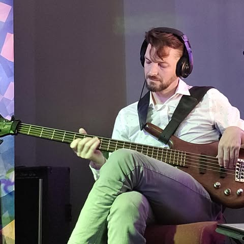
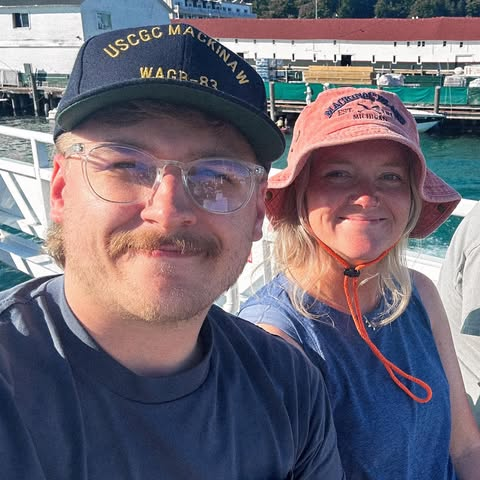
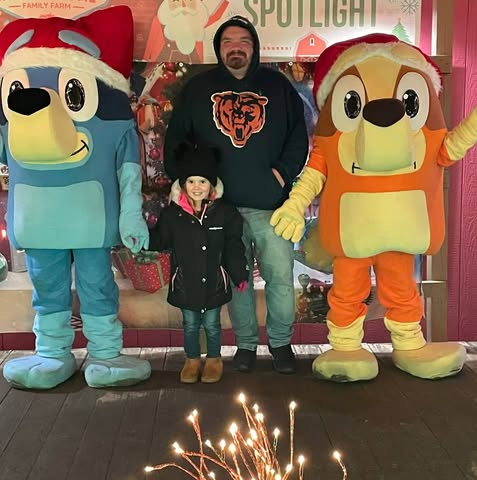

The People behind the Jam
- Coordinators
- Planning
- House Band
- The Turnups
- Guest Band
- Local/regional bands you might see at a jam
- Regulars
- Folks you are likely to see at a jam
- Sponsors
- Organizations backing the jams
Venue and Coordination

Nate MillerJam Coordinator - If you're walking into the Jam, talk to Nate during the setup/signup times, he'll get you a slot.
Caselle Brennae
Venue Coordinator
The House Band
The Turnups
The event leverages a house band to anchor the night:
- Kick off with varied set
- Provide backing instruments for walk-in open jams
Nate Miller
Bassist, Trumpet, Guitar
Jacob Hilbrich
Guitar, Keys, Sax, Drums

Luke PorterDrums, Guitar

Josh AndrewsGuitar, Bass, Drums
These guys are working and accomplished musicians. They can play with experienced musicians, while also being able to guide less experienced musicians during the jams.
Local or regional acts that might sit in from time-to-time...
Guest Bands
TBD
Who you're likely to see every week...
Regulars
TBD
Who you're likely to see every week...
Sponsor Organizations
Special thanks to the following:
- Shoreline: They provide the venue, the PA system, great food, service, customers and vibe.
- Roxy Music: Roxy Music is a local music shop in LaPorte, Indiana. Nate, Jacob and Luke from the house band work and teach at Roxy. It is common to see their students perform at the Jam.